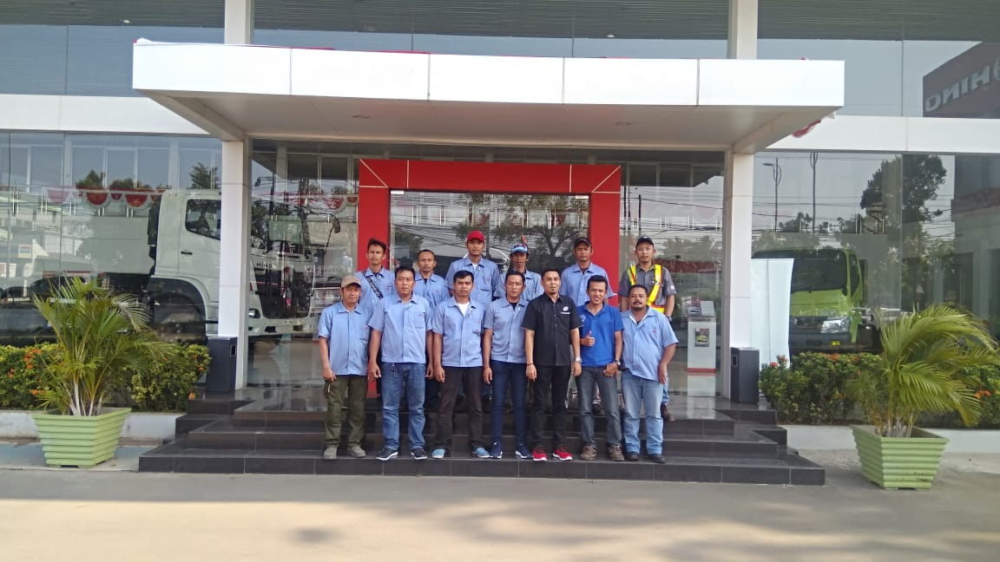
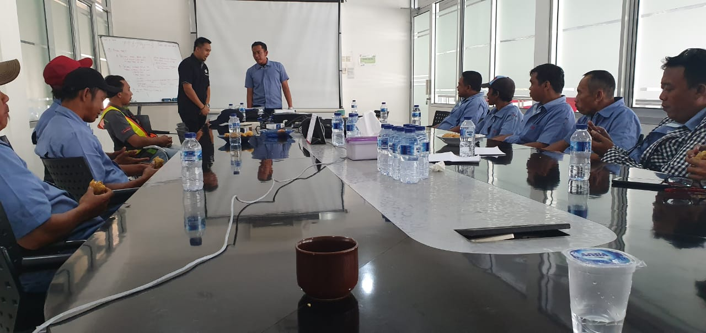
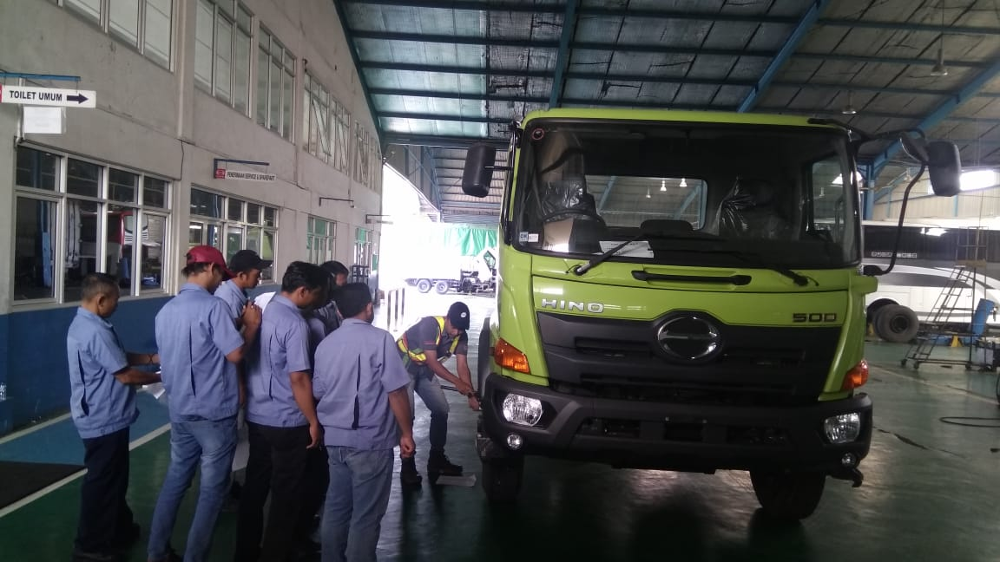

Tugas
Tugas driver
- Segala jenis usaha bergantung pada sumber daya manusia (SDM) yang terampil dan handal dalam operasionalnya untuk mencapai target yang ditentukan
- Penggunaan truk terutama dalam jarak menengah atau jauh, rata – rata menghabiskan 30% biaya operasionalnya untuk membeli bahan bakar, dengan gaya mengemudi yang efisien, dapat menghasilkan sebuah perbedaan besar dalam hal efisiensi biaya dan lingkungan hidup
- Untuk mencapai tahap tersebut, dibutuhkan sebuah keterampilan teknis khusus, sehingga driver tidak hanya memberikan penghematan biaya kepada perusahaan, namun juga membuat lingkungan yang lebih baik bagi sekitarnya.
Peranan Driver sangatlah penting bagi perusahaan dan juga bagi lingkungan Peranan Supir Yang Produktip dan Efesien
Dampak Terhadap Sekitar
- Penghematan Bahan Bakar Penghematan Biaya Bagi perusahaan dan Penghematan energi dalam negara Menciptakan Lingkungan yang aman dan kondusif bagi pemilik barang dan lingkungan
- Cara Berkendara yang baik sesuai aturan, berkontribusi dalam menciptakan lingkugan yang aman dan mengutamakan keselamatan
- Emisi Gas buang yang lebih baik Menciptakan lingkungan yang sehat dan minimum polusi
Training Driver untuk Proses yang Produktif dan Efesien
Seorang supir yang profesional tidak hanya dapat mengemudikan kendaraan yang baik, namum juga harus dapat menghitung hal – hal yang terkait dengan operasional kendaraan seperti :
- Biaya bahan bakar dan waktu perawatan kendaraan
- Total muatan yang sesuai dan aman
- Kemampuan dan umur ban yang digunakan
- Asuransi, dan lain – lain.
Faktor
Beberapa faktor yang mempengaruhi efesiensi sebuah kendaraan :
- Kondisi truk {tipe dan spesifikasi, umur dan kondisi, Berat dan posisi muatan}
- Rute Kendaraan {kondisi jalan, jarak tempuh, Macet/lancar}
- Cuaca {Cara Berkendara, Perlengkapan Truk}
- Driver Habit {Constan speed, perpindahan gigi, tindakan pengereman, teknik aklerasi}
- Lain -lain {Kapasitas isi solar, teknologi truk, jenis ban dan tekanan angin}
Perawatan yang baik dan persiapan yang matang dalam mengantisipasi faktor -faktor diatas mengoptimalkan kendaraan
Ramah Lingkungan
Training Driver untuk Lingkungan yang kondusif bagi pengusahan dan sekitar Beberapa faktor yang harus di perhatikan untuk memastikan keamanan bagi pengendara dan lingkungan:
- Total Muatan sesuai dengan kapasitas truk dan ketentuan regulasi pemerintah, lalukan pra pengecekan kendaraan terhadap lingkungan sekitar sebelum mengemudikan kendaraan.
- Tinggi Muatan yang tidak sesuai selain beresiko juga menjadikan bahan bakar lebih boros.
- Penempatan muatan yang aman dengan membagi beban yang rata antara sumbu, sehingga kendaraan menjadi stabil.
- Pengisian bahan bakar tidak boleh terlalu penuh ‘Bahan bakar akan mengembang pada cuaca panas’, jika tanki terlalu penuh secara otomatis akan merembes keluar sehingga bahan bakar terbuang.
- Penggunaan ban yang tepat sesuai dengan rute, kondisi jalan dan cuaca.
Tips
Ada 9 tips untuk efesiensi bahan bakar :
- Matikan mesin pada saat ‘idle’ dalam waktu tertentu, panaskan truk max 5 menit lalu jalan atau matikan. (Pemanasan yang berlebih membuat boros)
- Aklerasi yang lembut
- Batas injak gas 50%
- Mengemudi dengan kecepatan yang konstan
- Posisi gigi transmisi tinggi, putaran mesin rendah (Non Commonrail)
- Pengereman menggunakan engine brake
- Penggunaan rem utama/ rem tambahan pada saat dibutuhkan saja
- Pemilihan kendaraan yang tepat (jenis, total muatan, dll)
- Service kendaraan secara berkala
Dengan mengukur secara akurat faktor – faktor yang berkaitan dengan operasional kendaraan baru kita bisa mendapatkan hitungan real penghematan bahan bakar. Menjalankan 9 tips diatas secara riset kita bisa menghemat bahan bakar sebesar 5%.